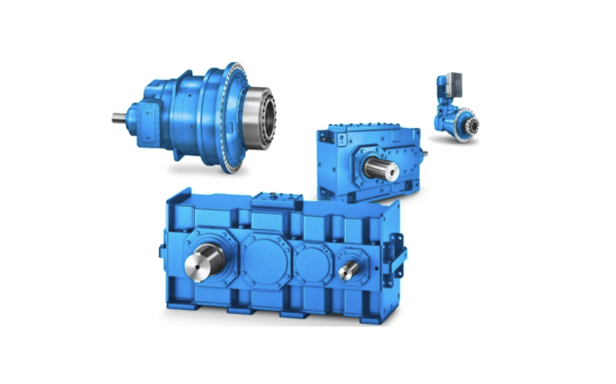

Reductor cónico-helicoidal industrial FLENDER B4DH entregado en México
— Los reductores industriales FLENDER B4DH de WeDrive han sido entregados con éxito en México.
Proveedor global de soluciones de transmisión de potencia industrial de SEW, Siemens, Nord, Bonfiglioli, Bauer, Baldor, ABB, Innomotics, Motox, KSB y más.
Por favor, proporcione los requisitos de su proyecto y los detalles del equipo. Nuestros ingenieros verificarán los parámetros operativos clave como el par, la velocidad, el factor de servicio y las condiciones de instalación para garantizar una selección de producto confiable.
Suministramos reductores industriales, motorreductores, motores eléctricos, acoplamientos, bombas y repuestos para aplicaciones industriales globales.
Como socio a largo plazo de marcas internacionales líderes incluyendo SIEMENS, INNOMOTICS, FLENDER, SEW, NORD, BAUER, LENZE, BALDOR, ABB, KSB y SUMITOMO, ofrecemos soporte confiable en la cadena de suministro y servicios profesionales de selección técnica.
Aprovechando sólidos canales de adquisición y economías de escala, ayudamos a los clientes globales a reducir costos de abastecimiento garantizando productos 100% originales y nuevos de fábrica.
También apoyamos servicios de personalización OEM y ODM para clientes que desarrollan sus propias marcas de transmisión industrial.
Con el rápido crecimiento del comercio global de importación y exportación entre China y los mercados internacionales, la demanda de soluciones de transmisión industrial de alta calidad y procesamiento personalizado continúa aumentando.
WE DRIVE HONGKONG se enfoca en suministrar reductores industriales confiables, motorreductores, sistemas servo, acoplamientos, componentes hidráulicos, actuadores y soluciones personalizadas de transmisión de potencia para industrias globales.
Nuestros productos se utilizan ampliamente en puertos, energía eólica, conservación de agua, energía nuclear, ingeniería marina, plantas químicas, equipos de elevación, maquinaria minera, equipos de construcción, sistemas de logística y líneas de producción automotriz.
Brindamos soporte técnico profesional, logística rápida a nivel mundial y productos industriales 100% originales de fábrica para clientes en todo el mundo.
Nos especializamos en reductores y motores industriales de alta gama (como SIEMENS SIMOGEAR). Nuestro equipo proporciona una verificación precisa de parámetros técnicos y asesoramiento de selección confiable para garantizar que su equipo funcione con la máxima eficiencia.




Producción OEM y ODM para reductores industriales y motorreductores

Pruebas integrales para reductores industriales y motorreductores
— Los reductores industriales FLENDER B4DH de WeDrive han sido entregados con éxito en México.

— Los servomotorreductores de precisión y sistemas de accionamiento inteligentes de SEW serán demostrados durante la exposición.

— NORD proporciona motorreductores industriales y soluciones de accionamiento para sistemas de transporte, minería, cemento e industrias pesadas.

— Innomotics organizó programas de capacitación para distribuidores en aplicaciones de elevación, minería y nuevas energías.

Para nuevos proyectos:
Reductores industriales, motorreductores, reductores de velocidad, motores eléctricos, acoplamientos y soluciones de transmisión de potencia.
Para asistencia en la selección de productos, descargue los catálogos técnicos de FLENDER, SEW-EURODRIVE, SIEMENS INNOMOTICS, NORD, BONFIGLIOLI, BAUER y otras marcas internacionales.
Para soporte técnico, precios o consultas sobre productos, contáctenos directamente.
WhatsApp / WeChat: +86 15502804645
Correo electrónico:
james@wedrivepower.com
we.drive.hk@gmail.com
© 2015 - WE DRIVE HONGKONG LIMITED Todos los derechos reservados.
Gracias a la plantilla de sitio web receptiva Dopetrope por AJ